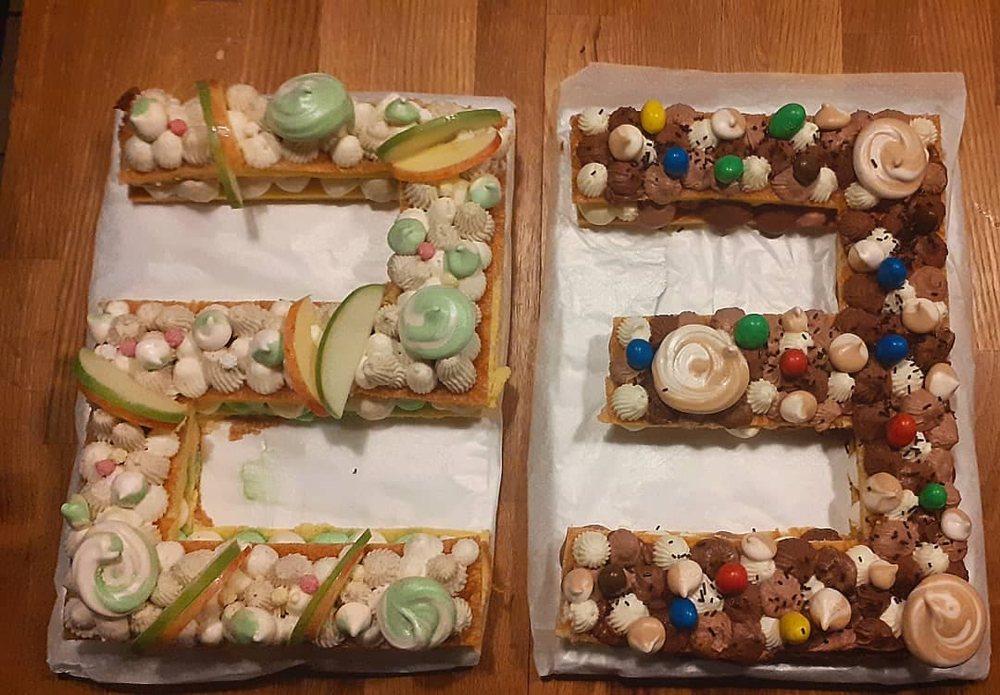
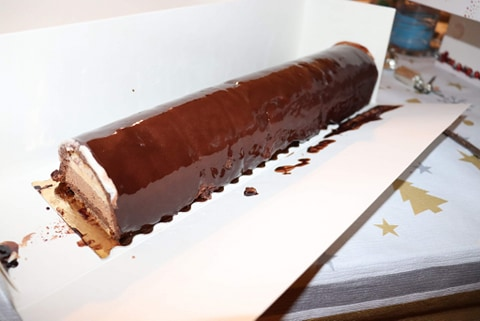
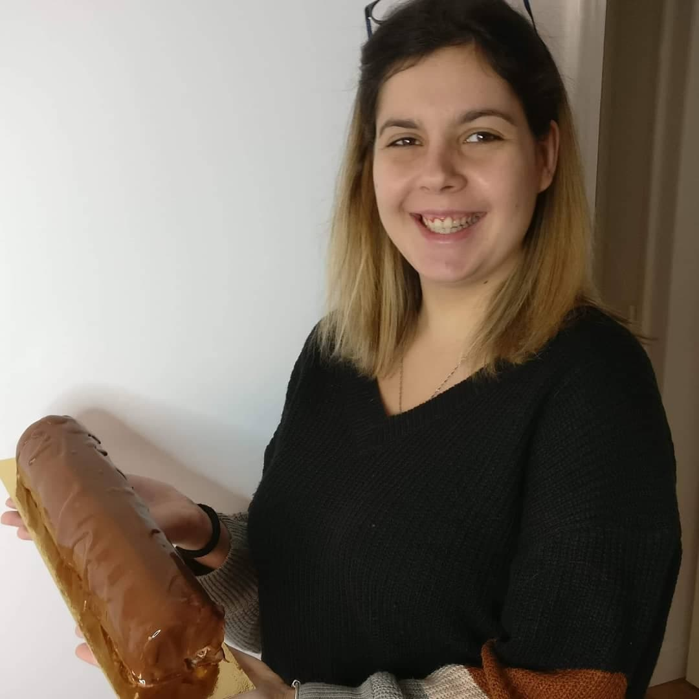
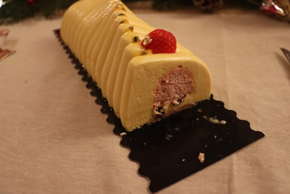
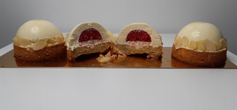
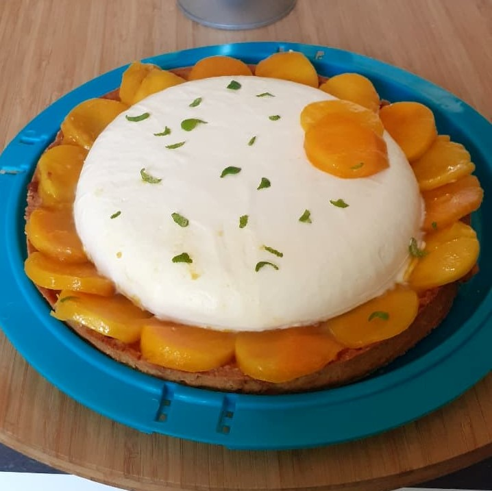
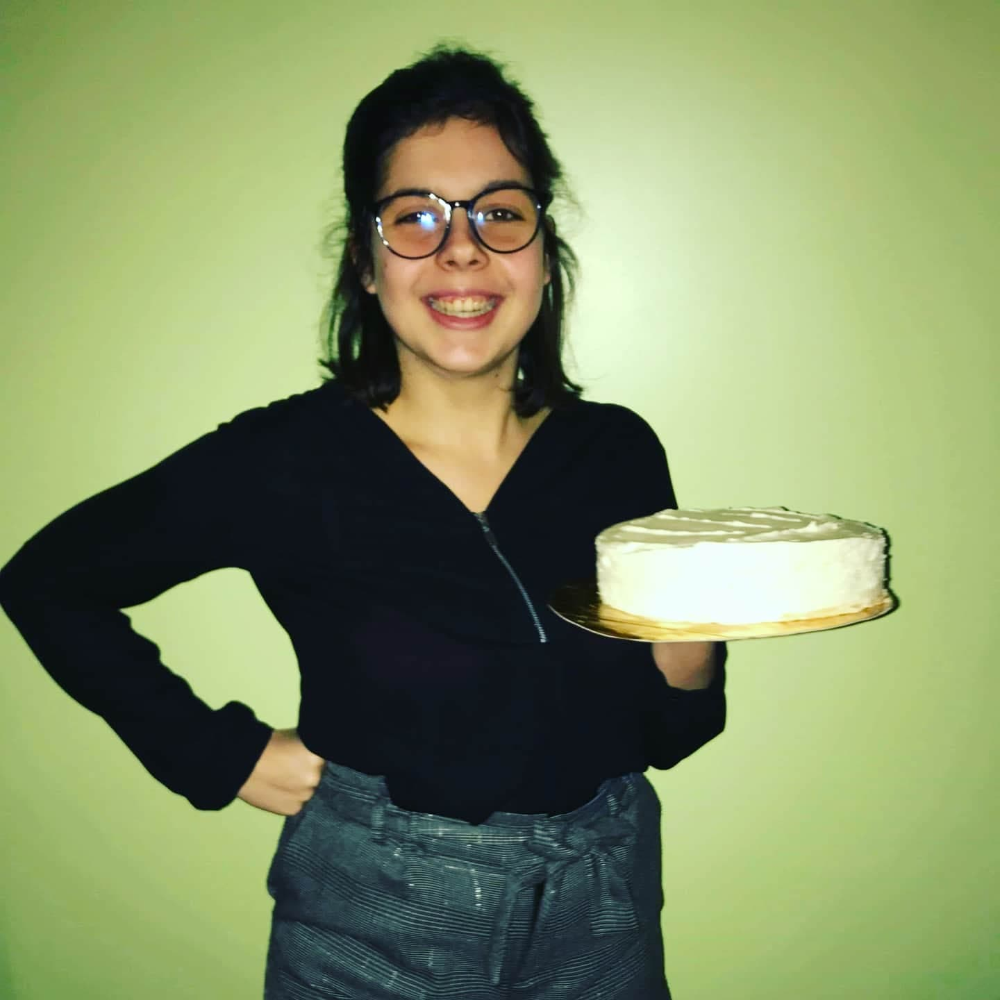
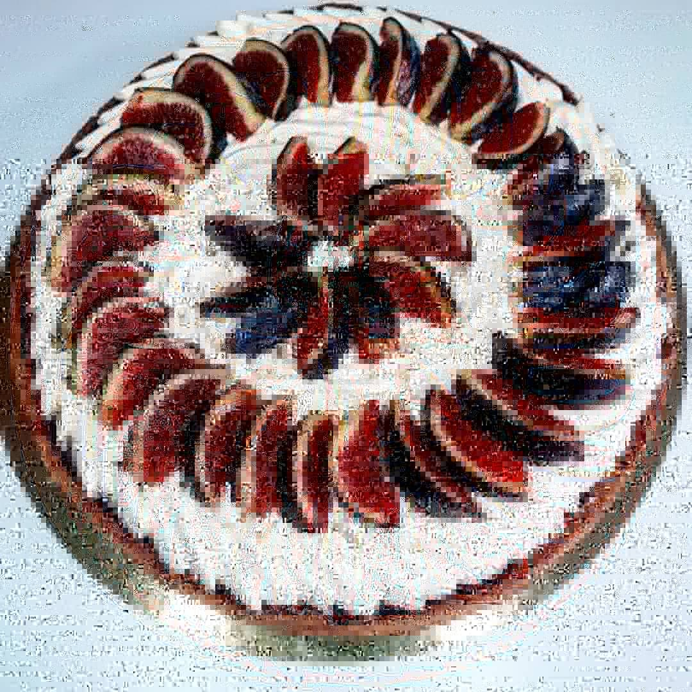
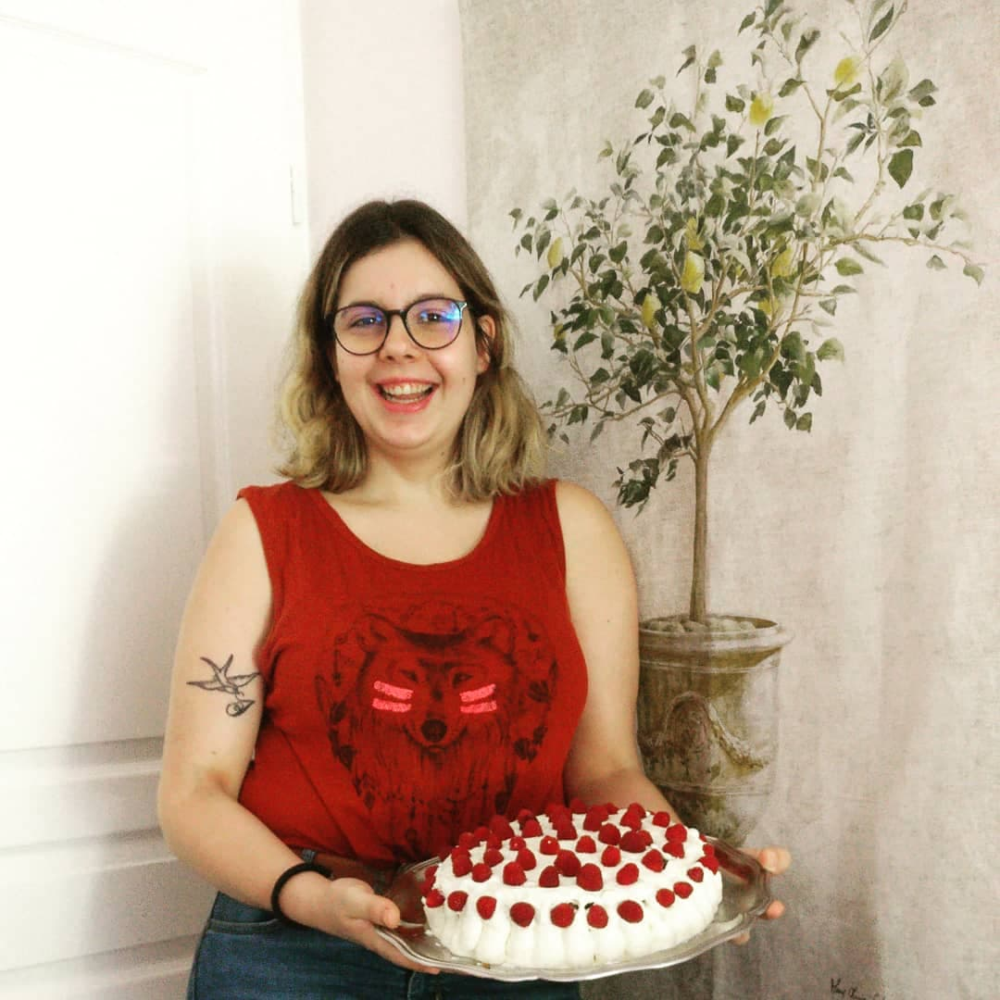

Après avoir regardé une célèbre émission télévisée sur la pâtisserie, je me suis mise à pâtisser des petits gâteaux du dimanche. J’avais l’impression de faire de grands exploits et pourtant c'était si peu. Après m’être acharnée dans la précision, la technique, après avoir demandé des retours constructifs à ma famille, j’ai pu faire de jolies créations. Certes, je suis encore au niveau amateur, mais je progresse petit à petit et je me fixe de beaux challenges. J’ai pu faire les bûches du Noel 2020 et j’ai aussi réalisé des numbers cake pour l’anniversaire de mon beau-frère et de mon conjoint.
Grâce à cette passion, j’ai pu progresser quant à ma précision mais aussi à ma dextérité (qui m’est bien utile dans mon métier!). Mais j’ai pu aussi apprendre à gérer mon stress afin de rendre en temps et en heure mes créations, et également de le gérer lors des ratés ! Finalement, la pâtisserie m’a permis d’être créative tant dans les goûts que dans la forme de mes gâteaux, tartes ou entremets !
|  |  |  |
|  |  |  |
|  |  |  |